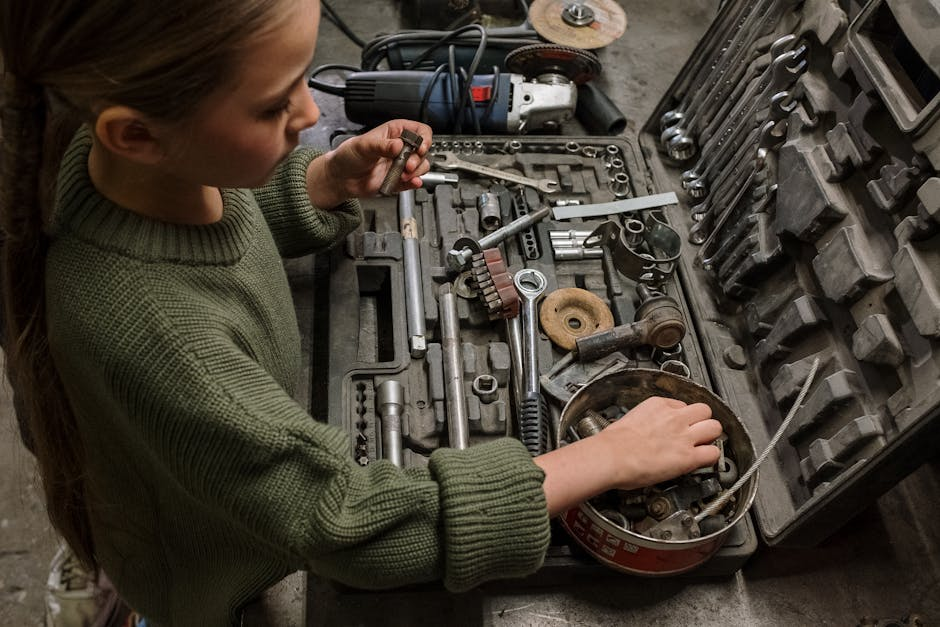

Curarize Flow: Restoring Your Driving Clarity with Expert Auto Glass Solutions.
Fast, reliable, and professional windshield replacement and chip repair to get you safely back on the road.
Get Your Free EstimateYour Safety is Our Priority
At Curarize Flow, we understand that a damaged windshield is more than just a nuisance—it is a critical safety hazard. We partner with industry leaders to bring you top-tier auto glass and windshield replacement services directly to your location.
Whether you are dealing with a minor chip or require a full car window replacement, our focus is on connecting you with the right professionals. We prioritize your safety and convenience by highlighting services that use high-quality materials and proven repair techniques.

Comprehensive Auto Glass Services
Expert solutions for every type of glass damage, ensuring your vehicle remains safe and secure.
Complete Windshield Replacement
Structural replacement of your front glass using premium materials to ensure your vehicle's safety integrity. We connect you with experts who handle full replacements efficiently.

Precision Chip Repair
Quick and effective chip repair that stops cracks from spreading. This service restores visibility and structural strength, often saving you the cost of a full replacement.

Car Window Replacement
Professional replacement for side and rear auto glass. Ensure a perfect fit, restored security, and protection from the elements for your vehicle's cabin.

Driver Experiences
"I needed an urgent windshield replacement after a rock hit me on the highway. Curarize Flow connected me with a team that came right to my driveway. Fast, professional, and zero hassle."
— Michael R., Jan 2026
"The chip repair was done in under 30 minutes. You can't even tell where the damage was. Excellent service and very transparent pricing through their partners."
— Sarah T., Feb 2026
"Someone broke my passenger window overnight. The car window replacement was handled flawlessly. Highly recommend checking out the services promoted here."
— David K., Mar 2026
Frequently Asked Questions
How long does a windshield replacement take?
A typical windshield replacement takes about 60 to 90 minutes. However, it is strongly recommended to wait an additional hour before driving the vehicle to ensure the adhesive cures properly and the auto glass is securely bonded.
Can my windshield be repaired instead of replaced?
Yes, many small chips and cracks can be repaired if they are smaller than a quarter and not in the driver's direct line of sight. Prompt chip repair prevents the damage from spreading and saves you the cost of a full replacement.
Do you offer mobile auto glass services?
Yes, the service providers we promote specialize in mobile windshield repair and replacement. Technicians can come to your home, office, or any safe location to perform the work, maximizing your convenience.
Do you handle car window replacement for side and rear glass?
Absolutely. While windshields are the most common repair, our partners are fully equipped to perform car window replacement for side door glass, vent glass, and rear windshields using precise fitments.
Is it safe to drive immediately after a chip repair?
Unlike full replacements, a standard chip repair cures very quickly using specialized UV resins. In most cases, your vehicle is safe to drive immediately after the repair process is completed by the technician.
Request Your Quote Today
Fill out the form below to connect with auto glass professionals. Quick response times and transparent estimates.